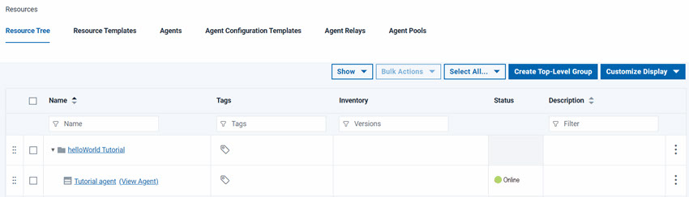

To deploy the tutorial component, or any component, you
must have an agent. An agent is a lightweight process
that runs on a target computer and does the actual work of deploying
components.
Before you begin the tutorial, make sure that you completed
the Prerequisites.
About this task
To complete the tutorial, you must have an agent that is
running on a target computer system. This target computer can be a
virtual image, or a physical computer, including the one where the
server is installed. You must have access to this computer and be
able to install the agent on it. In addition, you must create several
directories on the file system where the server is located. These
directories contain the artifacts that you deploy. To prepare the
tutorial system:
-
Provision a computer for use as the target computer.
-
Install an agent on the target computer.
-
Designate the agent for importing versions.
By default, one system-wide agent is designated to import component versions. If you skip this
step or if another agent is already designated, you can still use the new agent when you import your
component version. To designate the agent, see
System settings.
- On the Deploy server,
verify that the agent is installed by clicking . Your agent must be included
in the list of agents with a status of Online,
as shown in the following figure:
- Add the agent as a resource:
-
To the left of the Agents tab, click the Resource
Tree tab.
- Click Create Top-Level Group,
give the new group a name such as helloWorld Tutorial and
click Save.
This group is a container
for resources, such as agents and components.
-
On the same line as the resource group, click , as shown in the following figure:
-
In the Create Resource window, select the agent in the
Agent list, and click Save.
The agent is displayed as a child of the resource group.

- On the computer where you installed the agent, add files
that represent deployable artifacts to the file system.
- Create a directory and give it a name such as helloWorld on
the file system where the agent is located.
-
In the helloWorld directory, create a subdirectory that is named
1.0.
The source configuration the tutorial uses treats each subdirectory in the target directory as
a different component version.
- In the 1.0 directory, place several
files with any name and extension.
The files represent the artifacts that the agent deploys by using the processes that you
create. For the exercise, the number of files and their type is irrelevant, but, for best
performance, limit their number and size.
Note: If z/OS® is used on your target computer, convert text-type files that are used for artifacts to IBM®-1047 encoding.
The server and agent are configured for the tutorial, and
the files that represent artifacts are ready to use. If you installed
the agent on a remote system, you must know the credentials and locations
that you specified.